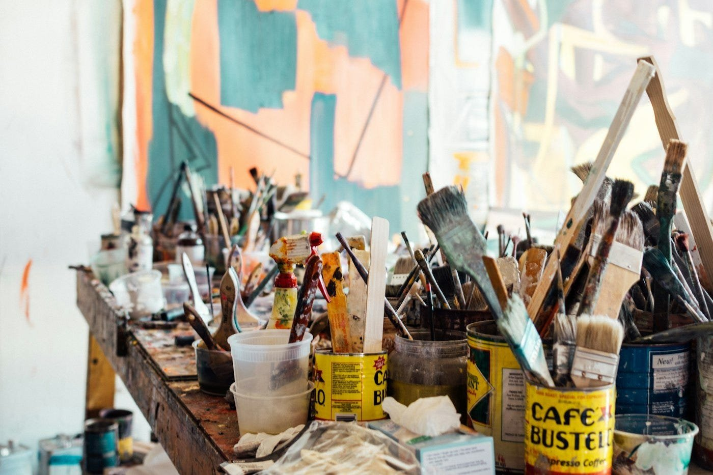
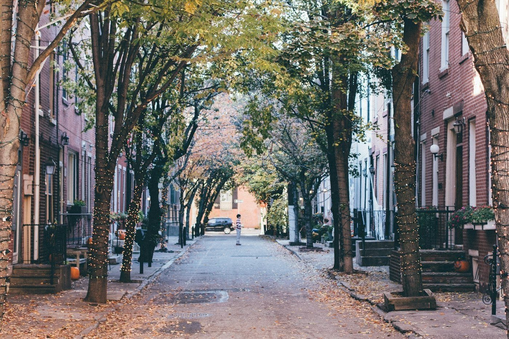
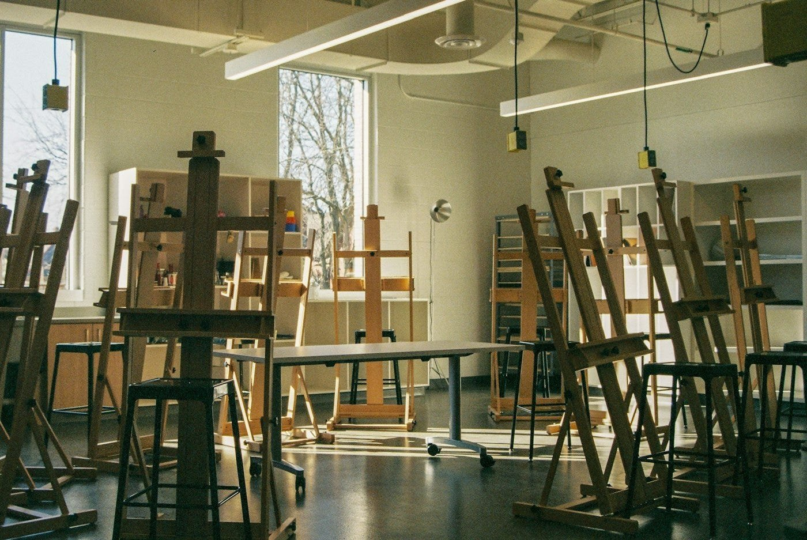
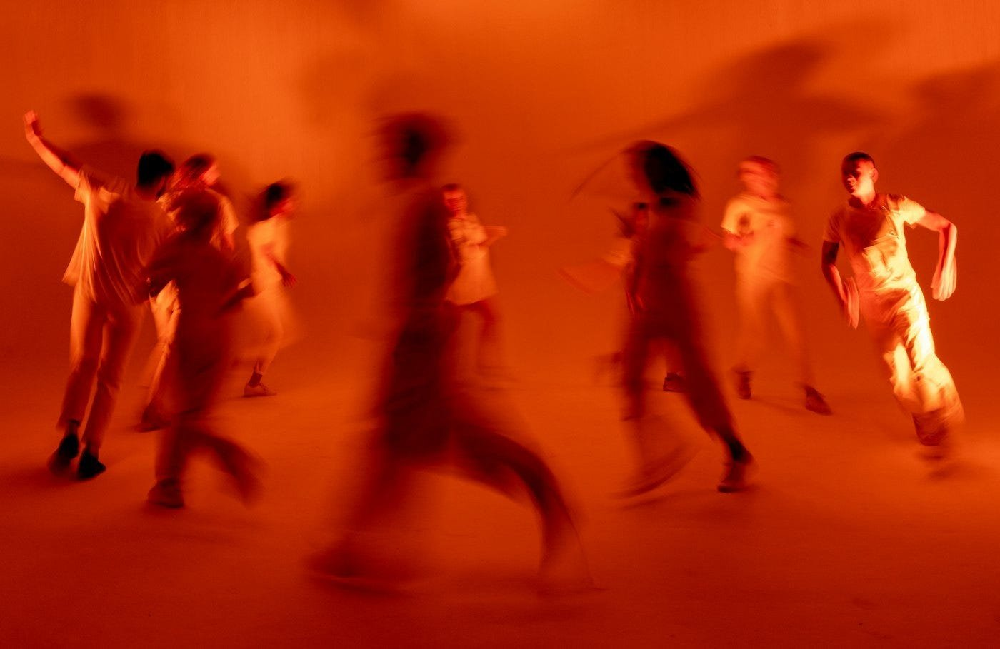
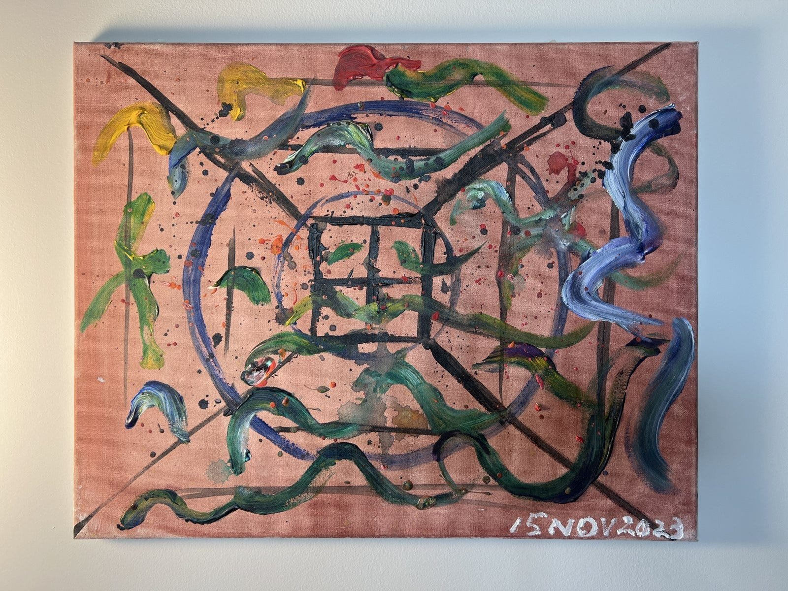
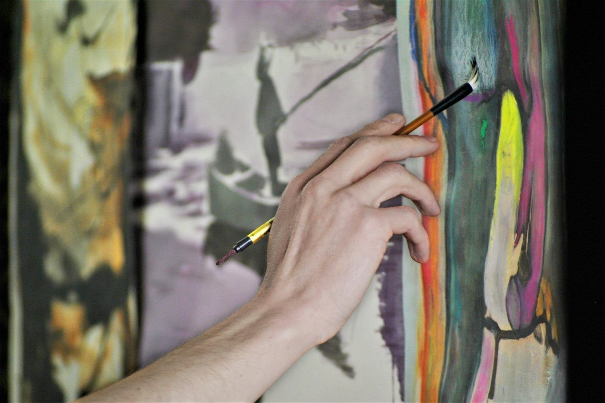
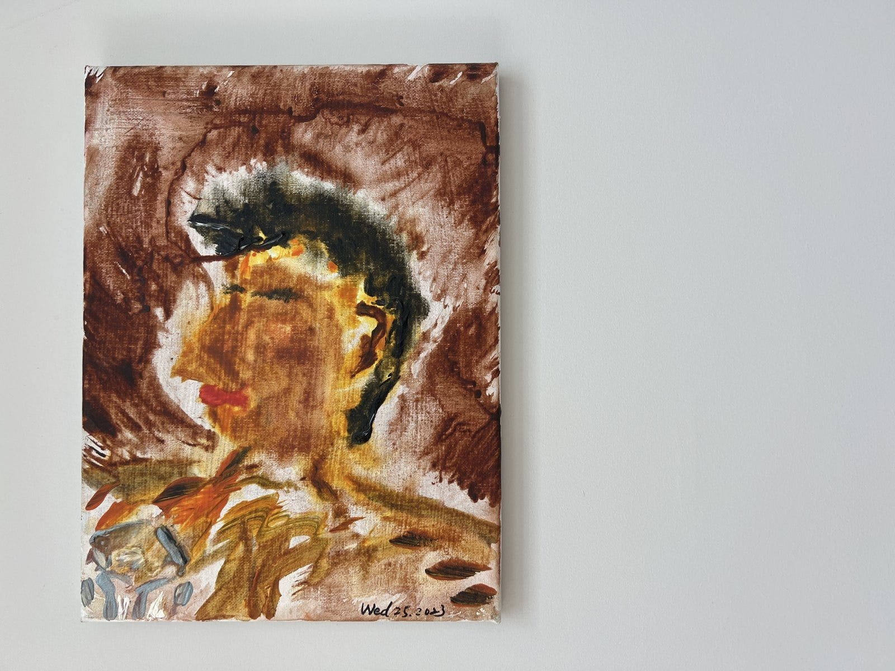
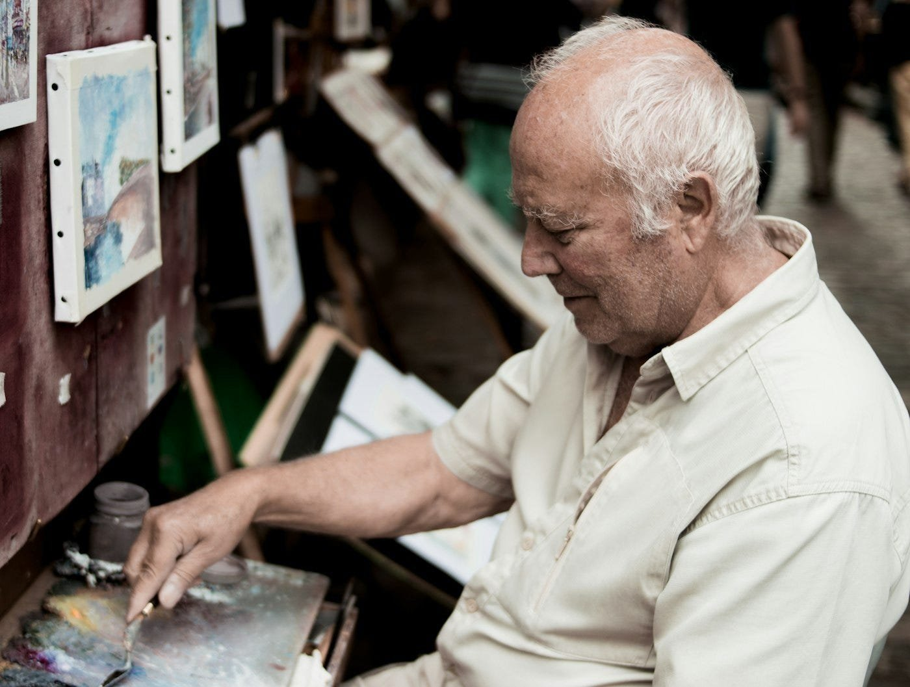
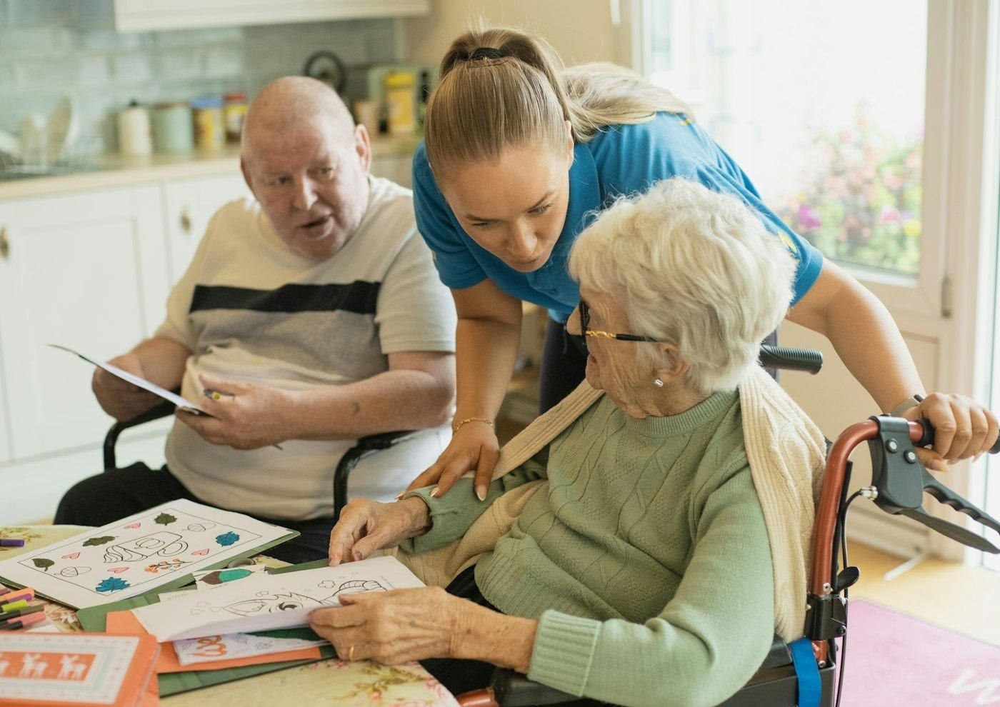
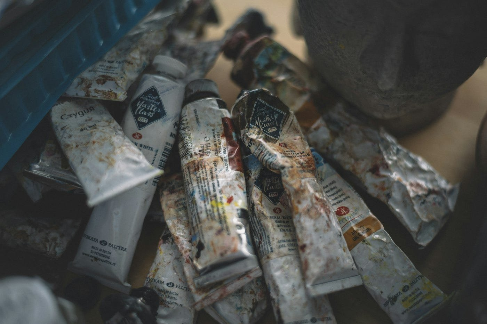

Why I keep coming back to art
A weekly log from Studio Partnership II at SVA MFA Interaction Design, built around the Stanford Center on Longevity Design Challenge. Separate from my thesis posts.
Week two of Studio Partnership II. Before I get to the desk research, a more basic question. Why am I doing this competition at all?
The honest answer starts with where I study. We are an interaction design program inside an art school, and I felt art should have a role in whatever I bring to this challenge. There is a second reason, less flattering. AI and robots will get more capable no matter what I do. Plenty of people can build a stronger robot, and they will do it better than I ever could. So what might I have that they don’t? Art, probably.

Last week I wrote that a happier old age means doing more of what you love, getting back what you lost, and keeping what you treasure from fading: memories, feelings, the things that were beautiful to you. Art is the one activity I know of that does all of that at once. I know because it did it for me.
In 2023, not long after I moved to Philadelphia, I bought an annual membership at Fleisher Art Memorial, a community art school, and picked a therapeutic art class off its list. I stayed about ten sessions. Every session had the same shape. First we moved: a little dancing, swinging our arms, loosening up. Then we painted. Then we told the group why we painted what we painted. Or didn’t. You could also say nothing. Nothing in that room was required of anyone.



Those paintings still hang in my home. Two of them are in this post. A few things from that room have followed me into this project.

Good or bad stopped mattering. I don’t judge them. They are mine. Most products measure success by how good the result looks. I want a different measure. Did the person make it themselves?

Each one holds a mood. I can look at a painting and know what I was feeling that day. For some I can still remember what I was thinking while my hand moved. A painting keeps a state of mind without needing words for it.
Nothing was forced. Move, make, share, or stay silent. The structure had exits built in, and that is what made it safe to begin.
The first image is the painting I think of as my summary of the whole course. One of the last ones. I started by drawing neat grid lines, very obediently. Then the lines turned into circles. Then loose curves, and by the end I was flicking drops of paint across the canvas. Looking at it now, it’s a picture of thinking slowly coming loose and starting to flow. That is what ten sessions did. The second is a portrait from earlier in the course. Not a good likeness. It doesn’t need to be.

SVA has an art therapy program of its own, which kept the idea close. So the question was sitting right there. What happens when you put robots and therapeutic art together, and then add older adults?

My desk research this week started from the program with the strongest evidence I could find: Opening Minds through Art, developed at Miami University for people with dementia. Its first design rule is that failure must be impossible, so the work is abstract and depends on no memory and no skill. Its volunteers are trained never to make an aesthetic decision for the person they sit with. And it runs entirely on people: one volunteer, one older adult, one hour a week. Which left me with a question I couldn’t find in the literature. If the volunteer is forbidden from deciding anything about the art, what are the volunteer’s hands actually doing? Opening tubes, probably. Steadying paper. Passing brushes. Whatever that list turns out to be, it’s the part a machine might take on without breaking any of the program’s rules.


I also learned what I’m not allowed to say. In many states “art therapist” is a protected title. A design cannot claim to do art therapy, whatever it does.
In class, Pinar gave us the shape of a problem statement: context, gap, significance. That’s my homework for week three.